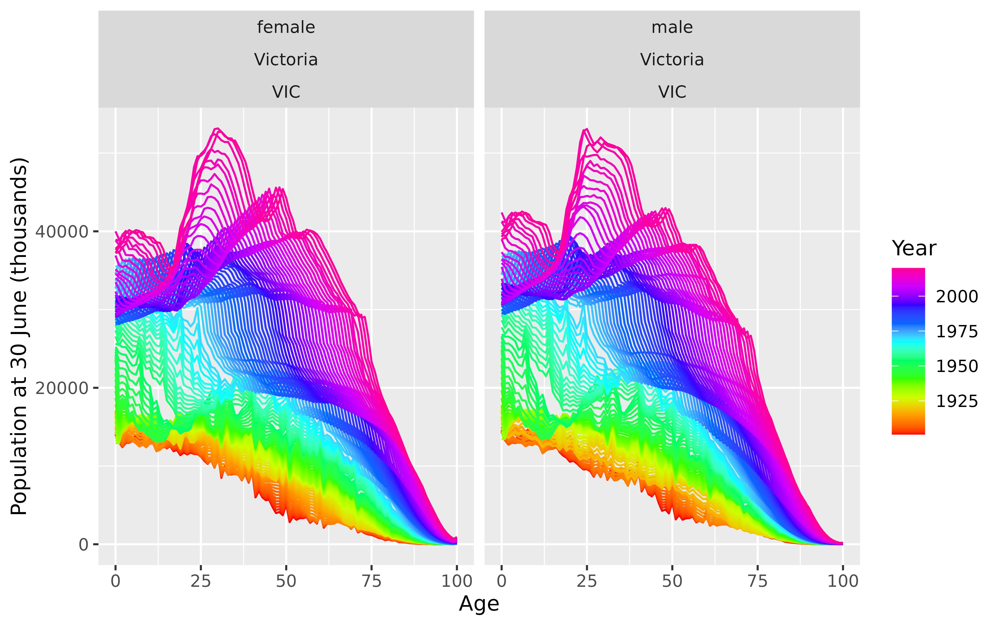

aus_mortality is an annual vital with three values:
| Mortality: | Mortality rate |
| Exposure: | Population at 30 June each year |
| Deaths: | Number of deaths |
Details
The data is disaggregated using four keys:
| Age: | Age at death |
| Sex: | male or female |
| State: | State of Australia |
| Code: | Short code for state |
The age group 100 also includes people who died aged older than 100. The data up to 1970 were taken from the Australian Demographic Data Bank (https://pkg.robjhyndman.com/addb/). From 1971, the data come from the Australian Human Mortality Database (https://aushd.org). There may be some discontinuities introduced due to different methods being used to prepare the data before and after 1971. Note that "ACTOT" includes both the ACT and overseas territories and is only available up to 2003. The data exclusively from the ACT begins in 1971.
Examples
library(ggplot2)
aus_mortality
#> # A vital: 300,879 x 8 [1Y]
#> # Key: Age x (Sex, State, Code) [101 x 27]
#> Year Age Sex State Code Mortality Exposure Deaths
#> <int> <int> <chr> <chr> <chr> <dbl> <dbl> <dbl>
#> 1 1901 0 female Australian Capital Territ… ACTOT 0 0 0
#> 2 1901 1 female Australian Capital Territ… ACTOT 0 0 0
#> 3 1901 2 female Australian Capital Territ… ACTOT 0 0 0
#> 4 1901 3 female Australian Capital Territ… ACTOT 0 0 0
#> 5 1901 4 female Australian Capital Territ… ACTOT 0 0 0
#> 6 1901 5 female Australian Capital Territ… ACTOT 0 0 0
#> 7 1901 6 female Australian Capital Territ… ACTOT 0 0 0
#> 8 1901 7 female Australian Capital Territ… ACTOT 0 0 0
#> 9 1901 8 female Australian Capital Territ… ACTOT 0 0 0
#> 10 1901 9 female Australian Capital Territ… ACTOT 0 0 0
#> # ℹ 300,869 more rows
aus_mortality |>
dplyr::filter(State=="Victoria", Sex != "total") |>
autoplot(Exposure) +
ylab("Population at 30 June (thousands)")
#> Warning: Removed 70 rows containing missing values or values outside the scale range
#> (`geom_line()`).
